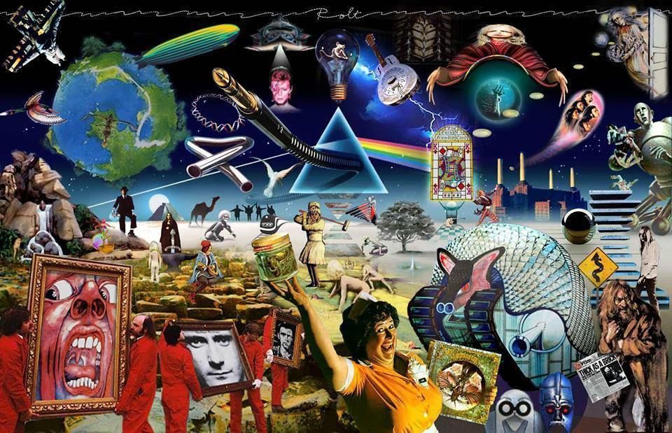

<!DOCTYPE html>
<html lang="en"></html>

    <head>   <!-- Title -->
        <title> Prog to the bone</title>
        <link rel="stylesheet" href="main.css">
    </head>
    <nav> <!-- Links to site -->
    <a href = "index.html">Home</a>
    <a href = "#section-3">Bands </a>
    <a href="#section-1">History </a>
    <a href="#section-2">Legacy</a><br />
    </nav>
    <body>
         <!-- Trying to change some font colors -->
            
        <h1>   <!-- header title for the onscreen -->
             Prog To The Bone

         </h1>
         
        <p> <!-- intro  -->
            Welcome to Prog To The Bone, this is a website all about progressive music. 
            Here you will learn everything from the birth of the genre all the way to what it has evolved into. 
            In addition we have a wide list of artist to explore to fully grasp Progressive rock and metal all 
            the way through your bones. Prepare to get jamming!.
        </p>
        <h2 id="section-1"> History of Prog</h2><!-- brief history and description, id to jump from nav, the bar at the top -->
        <p>
        Progressive came forth as a movement defined to expand stylistic boundaries within genres, the very 
        word Progressive or short for prog, defines the music as a progress forward into the future
         from what was there before, Because of the very experimental nature of the genre you will see 
         influences from a lot of diffrent places that aren't as commonly explored as more popular ones.
        </p>
         <p>
            Now for a long time until the 1960s progressive music was every type of music, but there came a 
         time where corporations,looking for pop hits severely limited the style of music that artist would 
         perform and sale to a larger audience. From here on out is where more progressive musicians
         decided that the most important part to their music is the personal agency they get by making it themsleves
         ths big scene would lead on to a more alternate type of music, it meant that artist would knowingly try 
         to make their work as diffrently as they possiblty could, because of this we started seeing music that
         was completely diffrent, they would be longer with more sections and less repeated choruses, some music
         would even have multiple parts to the same song smoothly transitioning from one song to a completely 
         diffrent one by the end of the song. These progressive music has clear roots whitin jazz and longer formats
         that focused on the performers and the flow first than anything else, but Progressive music is not just jazz, 
         it's more than jazz 

            By the 1960s-70s progressive music began sipping into other genres, the term "Art Rock" is something that 
            was thrown around and used, when describing music with progressive elements in a more fast and raw environment."
            
        </p>
         <!--Dino-->
        <h2 id="section-1"> The influence of Prog</h2> <!--Influence-->
        <p>
                It's ironic that one of the biggest influences on progressive music was a very popular band at the time
            but there is a reason why "The Beatles" are one of the most acclaimed artist of all time every album they pushed
            their music a bit forward. The album that really pushed the genre was "Sgt. Peppers Lonely Hearts Club Band" (1967).
        </p>
        <!-- Some embedded media, can be played from this site, it is music so I decided to put some music in-->
        <iframe class="embedd" scrolling="no" frameborder="no" allow="autoplay" src="https://w.soundcloud.com/player/?url=https%3A//api.soundcloud.com/tracks/188856788&color=%23ff5500&auto_play=false&hide_related=false&show_comments=true&show_user=true&show_reposts=false&show_teaser=true&visual=true"></iframe><div style="font-size: 10px; color: #cccccc;line-break: anywhere;word-break: normal;overflow: hidden;white-space: nowrap;text-overflow: ellipsis; font-family: Interstate,Lucida Grande,Lucida Sans Unicode,Lucida Sans,Garuda,Verdana,Tahoma,sans-serif;font-weight: 100;"><a href="https://soundcloud.com/jordanhutchison1020" title="Rorschach" target="_blank" style="color: #cccccc; text-decoration: none;">Rorschach</a> · <a href="https://soundcloud.com/jordanhutchison1020/the-beatles-a-day-in-the-life" title="The Beatles- A Day In The Life" target="_blank" style="color: #cccccc; text-decoration: none;">The Beatles- A Day In The Life</a></div>
        <p>
            Right after the beatles another influential band was that of King Crimson, this band focused even more on a newer and more rich and 
          diverse sound than anything that had come before it, for a long time even until modern day a lot of progressive music has taken inspiration From
          this band, one of their most popular ep's is that of "in the court of the crimson King".

        </p>
        <iframe class="embedd" scrolling="no" frameborder="no" allow="autoplay" src="https://w.soundcloud.com/player/?url=https%3A//api.soundcloud.com/playlists/364163582&color=%23ff5500&auto_play=false&hide_related=false&show_comments=true&show_user=true&show_reposts=false&show_teaser=true&visual=true"></iframe><div style="font-size: 10px; color: #cccccc;line-break: anywhere;word-break: normal;overflow: hidden;white-space: nowrap;text-overflow: ellipsis; font-family: Interstate,Lucida Grande,Lucida Sans Unicode,Lucida Sans,Garuda,Verdana,Tahoma,sans-serif;font-weight: 100;"><a href="https://soundcloud.com/jacob-ejlak" title="Jacob Ejlak" target="_blank" style="color: #cccccc; text-decoration: none;">Jacob Ejlak</a> · <a href="https://soundcloud.com/jacob-ejlak/sets/king-crimson-in-the-court-of-the-crimson-king" title="King Crimson - In The Court of The Crimson King" target="_blank" style="color: #cccccc; text-decoration: none;">King Crimson - In The Court of The Crimson King</a></div>
         <p>
            Another band that was hugeky influention within this movement was "Pink Floyd", Pink floyd was a fairly popular band in it's day and it is known 
            for having a fairly distinct sound that varies quite a lot from song to song, this is really where the entire genre get a lot of it's recognition and 
            influence, Pink Floyd lead this movement to new heights with their album "The Dark Side of the Moon".

            
         </p>
         <iframe class="embedd" scrolling="no" frameborder="no" allow="autoplay" src="https://w.soundcloud.com/player/?url=https%3A//api.soundcloud.com/tracks/83380061&color=%23ff5500&auto_play=false&hide_related=false&show_comments=true&show_user=true&show_reposts=false&show_teaser=true&visual=true"></iframe><div style="font-size: 10px; color: #cccccc;line-break: anywhere;word-break: normal;overflow: hidden;white-space: nowrap;text-overflow: ellipsis; font-family: Interstate,Lucida Grande,Lucida Sans Unicode,Lucida Sans,Garuda,Verdana,Tahoma,sans-serif;font-weight: 100;"><a href="https://soundcloud.com/scottrek110-1" title="Scottrek110" target="_blank" style="color: #cccccc; text-decoration: none;">Scottrek110</a> · <a href="https://soundcloud.com/scottrek110-1/us-and-them-pink-floyd-8-track" title="&quot;Us And Them&quot; - Pink Floyd  (8-track tape)" target="_blank" style="color: #cccccc; text-decoration: none;">&quot;Us And Them&quot; - Pink Floyd  (8-track tape)</a></div>
         <h2 id="section-2"> The Legacy of Prog</h2>
        <p>
            From classical jazz to hardcore funk and bossa, Progressive rock encompasses the true potential of music when giving the chance to spread it's wings and
            soar. It is the audacity and the determination that the leads of these movements have that really make the genre what it is, and that is one that can be 
            enjoyed for it's variety and nuance. Progressive has spawn many diffrent subgenres from spanning into metal, classical and rock, to alternative. Progressive
            music is something that has been celebrated and ennjoyed to this day, from Pink Floyd to more modern bands like The Mars Volta. This type of music will always 
            be successful as it exist in opposition of the norm, to push us to explore further from what is comfortable, this may be songs that last 30 minutes or using a 
            flute as lead for a rock album. 
        </p>

        
        <h2 id="section-3"> Examples and Bands</h2>
        <iframe class="embedd" scrolling="no" frameborder="no" allow="autoplay" src="https://w.soundcloud.com/player/?url=https%3A//api.soundcloud.com/tracks/1228842214&color=%23ff5500&auto_play=false&hide_related=false&show_comments=true&show_user=true&show_reposts=false&show_teaser=true&visual=true"></iframe><div style="font-size: 10px; color: #cccccc;line-break: anywhere;word-break: normal;overflow: hidden;white-space: nowrap;text-overflow: ellipsis; font-family: Interstate,Lucida Grande,Lucida Sans Unicode,Lucida Sans,Garuda,Verdana,Tahoma,sans-serif;font-weight: 100;"><a href="https://soundcloud.com/the-mars-volta" title="The Mars Volta" target="_blank" style="color: #cccccc; text-decoration: none;">The Mars Volta</a> · <a href="https://soundcloud.com/the-mars-volta/cassandra-gemini" title="Cassandra Gemini" target="_blank" style="color: #cccccc; text-decoration: none;">Cassandra Gemini</a></div>
        <p>
            The Mars Volta is modern american progressive rockband, their album Frances the Mute is a great example of progressive rock, the song Cassandra Gemimini 
            is 30 minutes long with several parts and shows what is possible within progressive.
        </p>
        <iframe class="embedd" scrolling="no" frameborder="no" allow="autoplay" src="https://w.soundcloud.com/player/?url=https%3A//api.soundcloud.com/tracks/17083793&color=%23ff5500&auto_play=false&hide_related=false&show_comments=true&show_user=true&show_reposts=false&show_teaser=true&visual=true"></iframe><div style="font-size: 10px; color: #cccccc;line-break: anywhere;word-break: normal;overflow: hidden;white-space: nowrap;text-overflow: ellipsis; font-family: Interstate,Lucida Grande,Lucida Sans Unicode,Lucida Sans,Garuda,Verdana,Tahoma,sans-serif;font-weight: 100;"><a href="https://soundcloud.com/yesofficial" title="Yes (official)" target="_blank" style="color: #cccccc; text-decoration: none;">Yes (official)</a> · <a href="https://soundcloud.com/yesofficial/yes-fragile-roundabout-full-length" title="Roundabout" target="_blank" style="color: #cccccc; text-decoration: none;">Roundabout</a></div>

        <p>
            "YES" is another band from early in the genre and it adds a more funky groove one that has been infuential to many pop culture and bands that have come long after
            it did.
        </p>
        <iframe  class="embedd" scrolling="no" frameborder="no" allow="autoplay" src="https://w.soundcloud.com/player/?url=https%3A//api.soundcloud.com/tracks/658715945&color=%23ff5500&auto_play=false&hide_related=false&show_comments=true&show_user=true&show_reposts=false&show_teaser=true&visual=true"></iframe><div style="font-size: 10px; color: #cccccc;line-break: anywhere;word-break: normal;overflow: hidden;white-space: nowrap;text-overflow: ellipsis; font-family: Interstate,Lucida Grande,Lucida Sans Unicode,Lucida Sans,Garuda,Verdana,Tahoma,sans-serif;font-weight: 100;"><a href="https://soundcloud.com/officialtool" title="TOOL" target="_blank" style="color: #cccccc; text-decoration: none;">TOOL</a> · <a href="https://soundcloud.com/officialtool/schism" title="Schism" target="_blank" style="color: #cccccc; text-decoration: none;">Schism</a></div>
        <p>
            TOOL is another progressive band from the 90's they are known for having a more darker mood slipping into some more metal roots and an overall more atmospheric take 
            on their songs.
        </p>


    </body>
    